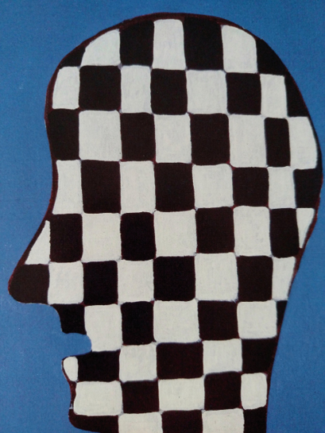

Sebastià Criado Miralles
Resumen: Este trabajo analiza el papel que juega el diseño gráfico en la manipulación consumista de las interfaces digitales comerciales actuales. Se identifica el concepto original de interfaz placebo: interfaz que, a través de invisibilizar ideológicamente el dispositivo, la interfaz y la condición de usuario, y el uso de signos placebo donde la promesa y la función están desalineadas, manipula para inducir en el usuario estados más proclives al consumo impulsivo, emocional e irreflexivo.
La investigación se desarrolla bajo un enfoque cualitativo, analítico y crítico, desarrollando un marco teórico donde: se redefine la interfaz como un «momento» donde coinciden soporte, interacción y usuario; se propone una tipología de interfaces que las clasifica según soporte e interacción y se define una clasificación semiótica que distingue entre signos fetiche, signos operativos y signos placebo; se hace un análisis de cinco casos de estudio (Tik Tok, Instagram, Amazon, Wikipedia y Are.na) cuyos resultados validan las hipótesis planteadas. En este análisis se demuestra cómo las interfaces comerciales actuales tienden a convertirse en interfaces placebo, comprometiendo la capacidad de decisión racional del usuario para dirigirlo hacia comportamientos prediseñados en beneficio de la plataforma. Quedan enfrente de este tipo de interfaces placebo, los casos de las interfaces sinceras (Wikipedia y Are.na), donde se preserva la agencia del usuario fomentando su capacidad crítica de decisión.
En conclusión, el trabajo sostiene que el diseño gráfico no es neutro en la cuestión estudiada, sino que las decisiones del diseño organizan las posibilidades de autonomía del usuario. Esto evidencia una responsabilidad deontológica del diseñador a la hora de producir un diseño que actúe como mediador preservando e incentivando la agencia libre del usuario.
Palabras clave: Interfaz de usuario, interfaz placebo, diseño gráfico, autonomía del usuario, invisibilización ideológica, signo operativo, signo placebo.
1.1 Objeto de estudio, preguntas de investigación e hipótesis
2.1 Enfoque de la investigación
2.2 Limitaciones metodológicas
3.2 Tipología del signo gráfico en las GUI
3.3 Invisibilización técnica e ideológica
4.1 Invisibilización en interfaces comerciales
4.2 Dark patterns como signos placebo
4.3 Interfaces comerciales como interfaces placebo
4.4 Síntesis del estado del arte
5.7 Síntesis del análisis de casos
6.1 Interpretación de los resultados del análisis
6.3 Universalidad de la interfaz placebo
6.4 Conclusión final y reflexión ética
·
En la actualidad, el ecosistema digital, internet, las redes sociales, etc., han pasado a ocupar gran parte de nuestro día a día, pero, así como el ecosistema natural lo entendemos prácticamente de forma instintiva debido a milenios de evolución, el mundo digital lo habitamos sin conocerlo de manera clara. La creciente ola de problemas de atención, de salud mental, aislamiento social y la adicción a las redes sociales, nos alertan. Las técnicas de manipulación y de sesgo cognitivo que utiliza la economía conductual y el neuromarketing no nos son ajenas, pero son cuestiones tan amplias y complejas que las dejamos a un lado y seguimos consumiendo y creando contenido sin pensar mucho en ello. Este trabajo aborda esta problemática desde el prisma del diseño gráfico. Tratamos de, para conseguir cierto punto de prevención en el usuario y de cautela deontológica en el diseñador gráfico, analizar cómo funcionan las interfaces gráficas de usuario y los signos gráficos que las componen y así identificar qué papel juega el diseñador gráfico en toda esta manipulación.
El objeto de estudio de este trabajo es la interfaz de usuario en el contexto comercial desde mediados de los dos mil hasta la actualidad y las responsabilidades del diseño gráfico en la configuración de modelos enfocados al consumo. En cuanto a ello nos preguntamos: ¿Cuáles son y cómo funcionan los elementos del diseño gráfico que actúan en la manipulación consumista de las interfaces de usuario digitales actuales? ¿Cómo sería una interfaz gráfica de usuario alternativa?
Proponemos como hipótesis que el diseño gráfico actúa en dos momentos específicos en la creación de interfaces placebo que tratan de manipular al usuario en pro del consumo impulsivo: el primero es la invisibilización del dispositivo, la interfaz y la condición de usuario, tratando de convertir la utilización de una herramienta digital en una experiencia inmersiva que impide la crítica a la herramienta y la percepción de sus sesgos y limitaciones (H1); el segundo momento es la decisión de utilizar signos placebo, es decir, signos operativos (aquellos que no solamente representan sino que ejecutan una acción al ser activados) en los cuales la promesa de función y la acción real que ejecutan están desalineadas (H2). Estas dos acciones del diseñador gráfico actúan conjuntamente con las estrategias de UX design del neuromarketing para comprometer la capacidad de toma de decisiones del usuario, manipulándolo para consumir lo que no consumiría desde un uso crítico y reflexivo de la razón (H3).
El objetivo principal de este trabajo es detectar qué acciones del diseño gráfico afectan directamente en la creación de interfaces que dirigen al usuario hacia el consumo emocional e irreflexivo. Con tal fin, vemos necesaria una aproximación al tema desde conceptos operativos que puedan funcionar a modo de diagnóstico, detectando cómo se objetivan en el diseño gráfico las bases de dicha manipulación. Buscamos un desarrollo teórico que sirva como alerta para los usuarios y como bases deontológicas para el diseñador gráfico. Todo esto abordando, desde el diseño gráfico, el concepto de «Usuaria Turing Completa» de Olia Lialina, lo que nos exige fijar la mirada en la agencia del usuario.
1.2.1 Objetivos específicos
Definimos los siguientes objetivos específicos:
·
2. MetodologíaEste trabajo se articula como una investigación cualitativa, analítica y crítica sobre el diseño con un objetivo pedagógico para el diseño y con una producción final donde, a través del diseño, podamos ampliar los conceptos objetivados en la investigación más allá de la interfaz gráfica digital.
El trabajo entonces consta de tres fases generales: una primera fase de investigación académica donde se desarrolla un marco teórico, estado del arte y el análisis de los casos de estudio seleccionados; una segunda fase de comunicación teórica que consta de una publicación editorial como herramienta de prevención en el usuario y de cautela deontológica en el diseñador y, por último, una fase de producción grafico-artística que traslada los conceptos fuera del marco de las interfaces digitales, aplicándolos en dinámicas de diseño personales y colectivas. El diseño del análisis, con los criterios de selección de casos y herramientas derivadas del marco teórico, se desarrolla en el apartado 5.1.
Reconocemos que el análisis realizado tiene limitaciones como la opacidad del funcionamiento real de los algoritmos de las interfaces, que son ocultados deliberadamente por las plataformas. Como el realizado es un estudio cualitativo y crítico, las conclusiones sobre la autonomía del usuario están basadas en nuestra interpretación, buscando, más que estadísticas numéricas sobre el comportamiento, una reflexión ética y profesional sobre el diseño gráfico. Añadimos también el posible sesgo que resulta de nuestra condición como diseñador gráfico y la limitación temporal que reduce la muestra a cinco casos de estudio. Compensamos estas limitaciones con la creación de conceptos teóricos claros y operativos basados en lógicas generales que permiten el análisis por parte del lector.
·
La palabra interfaz proviene de la voz inglesa interface que, a su vez, tiene su origen etimológico en el latin: inter (entre) + facĭes (caras) (Gutiérrez, 2017). Se recoge en los diccionarios ingleses por primera vez a finales del siglo XIX, donde se definía como «una superficie que forma un límite común de dos cuerpos, espacios o fases» (Merriam-Webster, s. v. "interface"). Estas primeras definiciones se hacían desde el ámbito de la física, poniendo ejemplos como el límite entre el agua y el aceite. Está claro que la palabra ha superado los límites puramente físicos y materiales y ahora tiene implicaciones también en cuanto a la interacción y el flujo de la información. El término se resignificó en la década de los sesenta. Marshall McLuhan lo utilizó en 1962, ampliando su sentido físico y llevándolo a un terreno conceptual como lugar de interacción entre dos sistemas y, más tarde, a mediados de la misma década, se empieza a utilizar con el significado relacionado con la informática para designar un aparato o protocolo que permite a dos dispositivos conectarse (Etymonline, s. v. "interface").
Ahora bien, desde una perspectiva humana, la interfaz es un fenómeno que se mezcla en nuestra vida, que nos afecta y condiciona. En este trabajo no podemos dejar la definición de interfaz en el ámbito puramente físico, ni como un ente abstracto, ubicuo e incuestionable. Siguiendo a Benjamin Bratton [1] , entendemos el conjunto de las interfaces como un mediador que traduce el mundo al usuario y permite, con ello, que el usuario tenga agencia en el mundo. Es importante, entonces, la perspectiva de la interfaz desde el usuario como humano, y para ello debemos entender la interfaz [2] como un mediador entre el usuario y el mundo. Por ello, el centro de este trabajo son las interfaces de usuario y las interfaces gráficas de usuario (GUI).
Aunque Bratton imprime sus definiciones en una explicación sobre un modelo de computación a escala planetaria, nos interesa su acercamiento a la interfaz de usuario como parte del día a día de todos. Entendemos que las interfaces, como punto de contacto que rige las condiciones de intercambio entre dos sistemas (Bratton, 2016, p. 220), necesitan estar registradas en soportes y su función es la interacción. Sin embargo, para que esta interacción no sea solamente una transferencia de datos impersonal, para introducir la perspectiva humana en ella, debemos abrir el concepto más allá de la materialidad. Gui Bonsiepe (1999), con su definición de interfase [3] , dirige la mirada a una dimensión más conductual de la interfaz. Para este autor, la interfase no es un objeto, no es la herramienta en sí, sino «un espacio en el que se articula la interacción entre el cuerpo humano, la herramienta (artefacto, entendido como objeto o como artefacto comunicativo) y objeto de la acción» (Bonsiepe, 1999, p. 17).

Bonsiepe sitúa así a la interfaz como el espacio mediador necesario que convierte a la materia en herramienta y los datos en información, dotándolos de propósito; pone sobre el papel el hecho de que es la interfaz la que crea la herramienta, que sin interfaz no existe la herramienta (Dubberly, 2021, p. 4). Para entender esta naturaleza inmaterial de la interfaz debemos dejar de verla como un objeto, y pasar a concebirla como un umbral activo, un efecto, siendo siempre un proceso o traducción que debe ocurrir (Galloway, 2012, p. 33). Este umbral o proceso debe poder activarse para existir. Lo que pretendemos decir es que para Galloway no existe la interfaz sin un usuario capaz de interpretarla, por lo que para existir debe ser activada. Hay que entender la interfaz como un proceso de mediación activa y, para ello, debemos siempre tener en el punto de mira al usuario, ya que, al final, es su capacidad intelectual y física la que activa dichos procesos. Es el usuario el que se pone en ese límite entre estados que es la interfaz. Una interfaz inactivable es, al final, materia inerte.
Desde esta perspectiva, una interfaz no puede ser un botón, una señal, una frontera o una palanca en un sentido material. Para que exista una interacción entre dos sistemas, debe haber un soporte, y un soporte es como se ha diseñado, pensado para permitir unas u otras interacciones, pero, para que sucedan, el usuario debe tener unas capacidades específicas. Pongamos una palanca de ejemplo: si la palanca es demasiado pesada, el usuario no puede levantarla, pero si el usuario es demasiado flojo tampoco. Esto nos indica que la interfaz —que rige las condiciones de la interacción— no es únicamente el soporte, la palanca; ni el usuario forma parte de ella, solamente, como parte de un briefing donde se proyectan unas capacidades prototípicas. Las capacidades reales del usuario concreto son necesariamente constitutivas de la interfaz. Todo ello nos lleva a una pregunta necesaria: ¿Qué es entonces una interfaz?
Para responderla, basándonos en todo lo dicho anteriormente, entendemos que los puntos en común que constituyen la interfaz de usuario son: un soporte que registre la información, una interacción (proceso de activación o traducción), y un usuario competente para llevar a cabo dicho proceso. En conclusión, decimos que una interfaz es el momento en el que coinciden un soporte, una interacción y un usuario capaz de activarla. Las palabras momento y coincidencia son claves, porque nos permiten entender la interfaz desde fuera de la materialidad específica de una pantalla o un mapa, y criticarla desde la perspectiva de la experiencia humana, dando al usuario concreto un papel activo.
Bajo esta definición, hemos creado una tipología de interfaces que nos permite clasificarlas en base a los ejes constitutivos de soporte e interacción. Para llevar a cabo el análisis de la interfaz desde los dos ejes hemos de entender que cada uno de ellos puede estar en lo que llamaremos estado activo [4] o pasivo dependiendo de las capacidades de respuesta de estos ejes ante el usuario. En el eje del soporte, decimos que está en estado activo cuando cambia ante la reacción del receptor, es decir, cuando responde. Un ejemplo de esto sería cuando, en una web, el receptor o usuario hace clic en el icono del menú y el soporte gráfico cambia abriendo el menú. Por el contrario, decimos que está en estado pasivo cuando no cambia ante la reacción del receptor, como en un cartel. En el eje de la interacción, la capacidad de respuesta está impresa en la direccionalidad del flujo de información. Decimos que una interacción es activa cuando el flujo de información es interdireccional , como en una conversación o en un chat de inteligencia artificial. Decimos que es pasiva cuando el flujo es unidireccional , de emisor a receptor, como en la lectura de un texto o en la visualización de un video.
Aportamos la siguiente tabla a modo de resumen aclarativo:
|
Eje |
Estado Activo (A) |
Estado Pasivo (P) |
|
Soporte (S) |
Cambia ante la reacción del receptor (SA) |
No cambia ante la reacción del receptor (SP) |
|
Interacción (Ix) |
Flujo interdireccional de la información (IxA) |
Flujo unidireccional de información (IxP) |
La combinación de los dos estados posibles en cada eje genera el siguiente espacio de análisis, con cuatro cuadrantes en los que se clasifican los distintos tipos de interfaz:

Si nos encontramos con un momento en el que coinciden un soporte que cambia, una interacción interdireccional y un usuario capaz de activarla , te nemos delante una interfaz activa (IzA) . Un ejemplo sería una web para comprar sandalias. En ella, el receptor observa una configuración de la información que le transmite, por ejemplo, que las sandalias verdes están rebajadas. El receptor hace clic encima de la imagen porque quiere saber más. El soporte cambia la información que presenta al receptor y abre la ficha del producto. El receptor decide que le interesa comprarlas así que hace clic en un botón que pone comprar. La web vuelve a cambiar y el receptor introduce sus datos, y así sucesivamente.
Si nos encontramos con un momento en el que coinciden un soporte que no cambia, una interacción unidireccional y usuario capaz de activarla, tenemos delante una interfaz pasiva (IzP) . Un ejemplo sencillo para este tipo de interfaz es la lectura de un libro impreso. Cuando el receptor lee, por ejemplo, Pedro Páramo de Juan Rulfo, la interfaz que constituye el libro no responde ni en cambios en el soporte ni en información. El libro sigue diciendo lo mismo y con las mismas letras impresas, independientemente de la reacción del receptor al leerlo.
Si nos encontramos con un momento en el que coinciden un soporte que no cambia, una interacción interdireccional y un usuario capaz de activarla, tenemos delante una interfaz social (IzS). Se puede imaginar ahora que se lee el mismo libro que en el ejemplo anterior, pero que se lee al mismo tiempo que otros tres amigos. Los cuatro se juntan en una terraza y se dedican a comentar sus impresiones. El soporte que registra la información que se comparte (el libro impreso) es un soporte pasivo y no cambia ante las reacciones, pero al comentarlo, la interacción pasa a ser activa, ya que el flujo de la información pasa a ser interdireccional. La interfaz social nace cuando la información registrada en un soporte pasivo se comparte.
Si nos encontramos con un momento en el que coinciden un soporte que cambia, una interacción unidireccional y un usuario capaz de activarla, tenemos delante una interfaz ventana (IzV). Ejemplos como un artículo de Wikipedia, el feed de Instagram o una película, nos muestran un caso en el que, aunque el soporte cambia, el flujo de la información es unidireccional. Durante la lectura de un artículo de Wikipedia, el usuario hace scroll, puede seleccionar texto, puede hacer zoom, etc. pero el flujo de información sigue yendo de emisor a receptor solamente.
Estos dos últimos casos (IzS, IzV), pueden hacer aflorar ciertas dudas. Se puede llegar a pensar que cuando se comenta un libro con amigos, el soporte es el cuerpo humano y ese sí cambia ante las reacciones. Se puede pensar, también, que al navegar por Instagram pueden darse interacciones activas como guardar una publicación o comentar. Y ante esto decimos que sí, que estos supuestos son ciertos, pero que debemos volver a los conceptos planteados anteriormente para recordar que la interfaz no es un objeto, no es un producto, no es un estado físico fijo, es un momento de coincidencia entre soporte, interacción y usuario. Estos momentos de coincidencia varían, se transforman y se superponen. Por ello podemos decir que al leer un ejemplar de Pedro Páramo hacemos uso de una interfaz pasiva y, al mismo tiempo, que al quemar ese mismo ejemplar hacemos uso de una interfaz activa. La definición aportada de interfaz permite estos solapamientos, porque incluye la agencia del usuario como constituyente de la interfaz, es decir: la intención cambia la interfaz. Puedes observar la mona lisa y la puedes hacer jirones, en ambos casos es la misma obra, pero en el segundo caso no se puede negar que el soporte cambia ante la reacción del usuario. La interfaz cambia, se retuerce, se fuerza, desaparece, se superpone y mucho más, por la agencia del usuario. Pero, ¿qué ocurre cuando el usuario no es capaz de realizar esa activación de manera autónoma? ¿Qué ocurre cuando el usuario se enfrenta a una interfaz con la agencia mermada?
En el origen de la informática, la comunicación entre usuario (programador) y máquina se llevaba a cabo a través de la introducción no intuitiva e incómoda de bits para intercambiar la información entre ellos. Llegó un momento en el que al usuario se le dio un teclado y un lenguaje en el que comunicarse con la máquina, el código de programación. La información, entonces, volvía al usuario como palabras comprensibles a través de una pantalla. Pero hubo un momento que lo cambió todo, la aparición de la interfaz gráfica de usuario o GUI por sus siglas en inglés Graphic User Interface . El Xerox Alto fue el primer ordenador en utilizar metáforas como la del escritorio e interacciones intuitivas a nivel gráfico en 1973. Esto fue un cambio de paradigma, permitiendo el uso de la herramienta por parte de personas no especialmente preparadas para la programación. (Morera, 2015, pp. 135-136) Fue el inicio de la democratización de la computación. En el caso de estas GUI, los signos han pasado de significar algo —de únicamente representar— a poder desencadenar también un evento real, por lo que se puede crear una separación a la hora de hablar de signos gráficos.
El signo se ha clasificado, históricamente, desde la teoría semiótica de Charles Sanders Peirce, que recoge en sus escritos tres tipos de signos dependiendo de la relación que mantienen con el objeto al que representan, a saber: el Icono , que representa un objeto por su semejanza ; el Indicio , que representa un objeto en base a sus causas o contigüidad y el Símbolo , que representa un objeto por convención social. Pero como bien explica Martha Gutiérrez Miranda, existe una nueva dimensión en la que analizar el signo:
Un icono dentro de la interfaz usa la representación simbólica para indicar en qué lugar se puede realizar un tipo de acción concreta sobre el sistema. Esta acción está dentro del contexto de la interacción, entre el sujeto y el sistema. Por lo tanto, la naturaleza del signo en la mente del sujeto es otra. El signo, una vez interpretado por el sujeto, debe ser asociado a una acción directa sobre el sistema, lo cual añade esa nueva dimensión que no existía en ningún otro proceso hasta la llegada de la interacción gráfica con las computadoras. (Gutiérrez, 2017)
Gutiérrez presenta así su concepto de signo interactivo . Pero debemos reconsiderar ciertos aspectos. No es cierto que no existieran, antes de la llegada de los ordenadores, signos que «usen la representación simbólica para indicar en qué lugar se puede realizar un tipo de acción concreta sobre el sistema» (Gutiérrez, 2017). Si pensamos en un ascensor anterior a la revolución digital, podemos imaginarnos perfectamente los botones con flechas hacia arriba y hacia abajo o todos los botones con el número de cada planta. Ese tipo de signos también está asociado a una acción directa sobre el sistema. Para resolver este conflicto de definición proponemos otra nomenclatura que recuerde menos a las interfaces digitales: el signo operativo.
Esta nueva dimensión, nos lleva a definir dos tipos de signos: un signo fetiche, que es aquel signo que mantiene una relación de únicamente representación con su objeto representado y el signo operativo, que no solamente representa, sino que, además, ejecuta una acción dentro del sistema. Como bien ha dicho Gutiérrez, el signo debe ser interpretado y asociado con una acción dentro del sistema, o lo que es lo mismo, una promesa de operatividad. Pero, ¿qué ocurre si la promesa de operatividad de un signo y la acción que lleva a cabo no se corresponden? Cuando un signo que promete una ejecución real tiene desalineadas la promesa y la función, es decir, que el usuario deduce una función y al activarlo no se cumple o se cumple una función diferente, decimos que el signo está desalineado, si esta desalineación se da deliberadamente y en pro de la manipulación del usuario lo llamamos placebo. Esta tipología semiótica nos permite identificar, a través del modelo: promesa ≠ función + intención manipulativa, signos gráficos que se utilizan sistemáticamente para manipular al usuario, es decir, encontrar un punto en el que el diseño gráfico ejerce un papel en la manipulación a través de las GUI.
Hay que aclarar por qué añadimos la intención manipulativa en el modelo de signo placebo, y es que, cuando un signo queda desalineado por error, como en el caso de un botón que está mal programado y no ejecuta la función prometida, no es el mismo tipo de signo, podríamos definirlo mejor como un signo vacío. Este, al ser percibido claramente como un error, no manipula al usuario de ningún modo.
Si nos imaginamos una interfaz donde, al utilizarla, todos los procesos materiales y tecnológicos sean visibles, el resultado sería una ininteligible sopa de datos, bits, código y avisos. Para que la interfaz sea una herramienta para el usuario, para que el usuario pueda activarla, debe haber cierto nivel de invisibilización. Pero ¿qué cosas debemos esconder? ¿Cuánto se pueden llegar a invisibilizar los elementos que conforman el fenómeno de la interfaz de usuario? Podemos entender, como hemos explicado, que hay ciertas cosas que se pueden invisibilizar sin caer en dilemas morales. No podemos demonizar las interfaces gráficas de usuario, porque muchas de las invisibilizaciones que existen como metáforas gráficas en las GUI son las responsables de que todo el mundo pueda entender la interfaz y hacer uso de ella. En el fondo, cierta invisibilización es necesaria, pero siempre en pro de la democratización de la tecnología y, en muchos casos, de la accesibilidad.
Sin embargo, Olia Lialina (2019) identifica cómo este proceso de invisibilización va más allá de la simplificación técnica. En Usuaria Turing Completa, la artista y teórica de internet observa que los ordenadores se han ido haciendo invisibles, en sus palabras: «se achican y se esconden. Merodean bajo la piel y desaparecen en la nube» (Lialina, 2019, p. 9). Junto con el ordenador, hay algo más importante desapareciendo, el usuario mismo. Según Lialina, esta desaparición no es inocente, sino que es el resultado de una sucesión de decisiones desde el diseño de interfaces que han terminado por erosionar la consciencia del usuario sobre su propia condición de usuario. Lialina clasifica este proceso en tres fases o invisibilizaciones: la del ordenador, la de la interfaz y la del usuario.
La primera es la invisibilización del ordenador. El ordenador, al separar las funciones de las exigencias del hardware—al contener distintossoftwares—, pasa a entenderse como un «sistema informático digital automático para todo propósito» (Neumann, 1945, citado en Lialina, 2019, p. 20). Así, el ordenador es un sistema neutral. Esta neutralidad es lo que lo hace valioso, ya que le permite llevar a cabo cualquier tarea lógica. Con la invisibilización del ordenador, el usuario pierde la consciencia de que está haciendo uso de una herramienta de propósito general y, con ello, la posibilidad de hacer usos propios, alternativos y originales de dicha herramienta.
La segunda es la invisibilización de la interfaz. La interfaz es, como ya hemos visto, un momento de coincidencia donde se objetivan las posibilidades de interacción. El diseño de la misma, restringe y favorece unos u otros usos. Cuando las interfaces son diseñadas hacia la experiencia inmersiva, el usuario deja de percibir esas restricciones, no porque hayan desaparecido, sino porque deja de ser consciente del uso de una herramienta diseñada. Lialina denuncia que el diseño de interfaces ha cogido como objetivo «hacer a las usuarias olvidarse que las computadoras y las interfaces existen» (Lialina, 2019, p. 11). Se ha desarrollado una tendencia donde se trata de sustituir el concepto de diseño de interfaces para terminar en un diseño de experiencias que pretende diluir el consumo en la experiencia vital, es decir, hacer del consumo una parte crucial para la satisfacción humana. Con esto se consigue equiparar, o confundir, comprar unos zapatos con disfrutar de una amistad, o comprar el último iPhone con sentarse al sol en un frío día de invierno. Esta invisibilización tiene mucho impacto en temas como la sexualidad, la sociabilidad, la autoestima y el disfrute de la experiencia real.
La tercera, y la más grave según Lialina, es la invisibilización del usuario. El hecho de ser usuario de una herramienta te hace consciente del uso de la herramienta, aunque se haya tratado de invisibilizar. Es esta consciencia de usuario lo que permite que este se haga con la herramienta y decida de manera crítica si la usa, cómo y para qué. Por ello se reduce al usuario a un consumidor emocional de interfaces invisibles. Esto lo explica Lialina con las siguientes palabras: «La negación de la palabra "usuaria" en favor de "personas" se torna peligrosa. Ser una usuaria es el último recordatorio de que existe, ya sea visible o no, una computadora, un sistema programado para ser usado» (Lialina, 2019, p. 12). Al perder la consciencia de la condición de usuario, se pierde también la posibilidad de reclamar los derechos sobre la herramienta, o de criticar las condiciones de la interacción.
Lialina identifica la base sobre la que se construyen estas invisibilizaciones en la idea planteada por Alan Cooper y sus colegas de que «como diseñadores de interacciones, es mejor imaginarse a los usuarios —especialmente a los principiantes— como simultáneamente muy inteligentes y muy ocupados» (Cooper, Reimann y Cronin, 2007, p. 45, citado en Lialina, 2019, p. 15). Este pensamiento intenta convencer de que el usuario debe dejar de percibir la herramienta, para centrarse en completar la acción que quiere realizar. Aquí añadimos también la emoción que quiere satisfacer. Pero el problema no reside en que el usuario esté o no muy ocupado en las tareas, o en que quiera realizarlas de manera rápida y sencilla. El problema está en que el usuario naturaliza el hecho de ponerse en manos de la interfaz de forma acrítica, «[Las usuarias] delegan el establecimiento del límite entre creativo y repetitivo, maduro y primitivo, real o virtual, a las diseñadoras de aplicaciones» (Lialina, 2019, p. 18). Cuando el diseño decide por el usuario esos límites, el usuario pierde la posibilidad de redefinirlos y reinterpretarlos. En un mundo donde todo está mediado por interfaces digitales, la delegación de los límites no es una cuestión de utilidad o comodidad, es una renuncia a la propia agencia.
A partir de este análisis, proponemos entender la invisibilización no como una dicotomía buena/mala (porque los diseñadores no somos omnipotentes y debemos adaptarnos a las características del proyecto realizado), sino como un contínuo entre dos puntos: en un lado, la invisibilización técnica en pro de la usabilidad, la desaparición de la fricción y la reducción de la carga cognitiva a la hora de utilizar la interfaz; en el otro lado, una invisibilización ideológica que oculta elementos y características importantes de la interfaz, afectando a la autonomía de decisión del usuario. Entre estos dos puntos existen posiciones intermedias. Como hemos visto en Lialina, lo más problemático es la pérdida de la consciencia de usuario. Puede haber casos donde, por exigencia del proyecto, se deba hacer una interfaz con una intención inmersiva, pero hay que hacerlo manteniendo la condición de usuario del receptor. El usuario debe seguir percibiendo la existencia de la interfaz, de la mediación, del diseño. La visibilidad total del sistema lo vuelve inutilizable, la inmersividad total disuelve al usuario en un consumidor pasivo y acrítico. Entre los dos extremos, cada decisión de diseño afecta a la autonomía que mantiene el usuario. Este es el importantísimo papel que juega el diseñador en todo esto.
Como alternativa, Lialina propone la Usuaria Turing Completa. Este concepto hace una analogía al sistema Turing completo , que son aquellos sistemas que pretenden emular la idea de máquina universal de Turing, capaz de realizar cualquier tarea lógica con el suficiente tiempo y memoria. Lialina utiliza esta metáfora para explicar que los usuarios tienen «la habilidad de lograr sus objetivos a pesar del propósito principal de una aplicación o dispositivo» (Lialina, 2019, p. 23). Esto no significa que todo usuario debe ser un hacker , sino que debe poder estar en un estado mental que le permita ver la herramienta y sus límites para ser consciente de su capacidad de reinterpretación de la misma en pro de sus propias intenciones. Por todo ello, el continuo de invisibilización que proponemos tiene la aplicación en el análisis de juzgar, en cada decisión de diseño, si el ocultamiento de un elemento de la interfaz se hace por motivos legítimos o si tiene como objetivo inducir estados adulterados de consciencia que lo alejen de la Usuaria Turing Completa y lo acerquen al consumidor emocional.
La interfaz placebo funciona como concepto integrador del marco teórico combinando los conceptos de signo placebo e invisibilización ideológica. La definimos como: una interfaz que, haciendo uso de signos placebo e invisibilización ideológica, induce al usuario a un estado psicológico donde queda comprometida su autonomía en la toma de decisiones con la finalidad de manipular su capacidad crítica. Esta interfaz se relaciona con el signo placebo porque estos son los signos gráficos encargados de manipular cognitivamente al usuario. Cada uno de ellos es un signo engañoso que conforma el lenguaje placebo del diseño gráfico. La invisibilización ideológica, por su parte, es la encargada de crear el contexto necesario para que el usuario caiga en el engaño, haciendo posible la credibilidad de los signos placebo. Es gracias a que el usuario deja de ser consciente del uso de la herramienta que los signos placebo son capaces de inducir estados emocionales basados en sesgos cognitivos, ya que el usuario es menos proclive a poner en duda una experiencia inmersiva. Por todo esto la interfaz placebo funciona con la misma lógica que el signo placebo, prometiendo al usuario una función y, en realidad, ejecutando otra.
El placebo en la interfaz, como hemos dicho, tiene sus consecuencias principales y su objetivo en la merma de la autonomía del usuario, es decir: de su agencia. Si lo desgranamos, podemos observar cómo afecta a dicha agencia en tres niveles:
El primer nivel es el perceptivo. Basándonos en la invisibilización del ordenador y de la interfaz de Lialina, podemos deducir que, cuando se invisibiliza el ordenador, se está manipulando la recepción de información sensorial. La naturalización del ordenador y el diseño de experiencias inmersivas implica impedir la percepción de la herramienta y, por tanto, su crítica.
A nivel cognitivo, el procesamiento de la información, la interpretación del usuario, están adulterados. Los efectos que pueden tener los signos están escondidos o son engañosos, y se presentan para explotar deliberadamente sesgos cognitivos, por lo que el razonamiento que hace el usuario no está basado en la realidad. Estos signos placebo podrían verse descubiertos por el hecho de saberse usuario de una herramienta diseñada, pero las consecuencias perceptivas que tiene la interfaz placebo sobre el usuario no lo permiten.
El tercer nivel en el que el usuario se ve afectado por la interfaz placebo es el objetivo último de este tipo de interfaz, manipular al usuario a nivel decisorio. Si el usuario no percibe la herramienta y además interactúa a través de signos placebo que explotan sesgos cognitivos, no puede decidir de manera autónoma y libre. El usuario pasa a reaccionar emocionalmente a la información que compone la interacción, impidiendo la toma de decisiones de manera autónoma. Este es el final del camino, el objetivo de la interfaz placebo, la generación de un consumidor alienado que no consiga actuar por su cuenta y ni siquiera sea consciente de ello.
Integrando este concepto con nuestra definición de la interfaz como momento, recordamos que la interfaz es un momento donde coinciden soporte, interacción y un usuario capaz de activarla. Si el usuario, por las consecuencias explicadas, no es capaz de llevar a cabo esta activación o traducción de manera autónoma, el efecto de la interfaz se dirige a la manipulación, y es una interfaz placebo. El resultado de la interfaz placebo es la disolución del usuario autónomo. A modo de diagnóstico, una interfaz es placebo si impide la percepción de la herramienta a través de invisibilizaciones ideológicas, utiliza signos operativos desalineados para evitar el razonamiento libre del usuario, prima en ella la retención del usuario más que los usos propios y originales del usuario y, con todo ello, se orienta a la manipulación del sujeto en pro de objetivos ajenos a él. Esta configuración conlleva, mayoritariamente, beneficios unilaterales de la plataforma que presenta la interfaz, impidiendo el beneficio compartido que debería regir las interacciones comerciales.
Esta categoría de interfaz nos permite hacer operativa la hipótesis: El diseño gráfico comercial actual reduce sistemáticamente las interfaces a interfaces placebo a través del uso de signos desalineados e invisibilización ideológica.
El diseño no se puede confinar en una mera acción estética, sino que debe ser observado desde la perspectiva en la que el diseño es aquella decisión proyectiva que organiza, limita, y crea posibilidades de interacción, es decir: diseñar es decidir. Esta manera de afrontar la idea de diseño nos permite entender cómo el diseño «es un dominio que se puede manifestar en todos los campos de la actividad humana [5] » (Bonsiepe, 1999). Lo que nos lleva a ver el diseño más allá de las profesiones clásicamente denominadas diseñadoras (diseño gráfico, industrial, de producto, de interiores, de moda, textil, etc.) y sitúa a la acción de diseñar en el espacio de aquello que configura las interacciones. Esta universalidad del concepto de diseño puede verse en el hecho de que no es extraño oír que se diseña una ruta, un plan de huida, un menú, un proceso, una investigación, etc. Si ponemos de ejemplo el caso de un cocinero del que se diga que ha diseñado un menú, podemos decir que dentro de la cocina hay muchas tradiciones, y dentro de cada tradición muchos platos con muchos ingredientes; el proceso de ir contestando a las incógnitas que nos plantea la indeterminación es a lo que llamamos diseñar, es decir: decidir. Pero, ¿por qué, entonces, no nos referimos al cocinero como diseñador?
Desde una perspectiva histórica, la decisión se separó de la producción a través de la industrialización. Mientras que en el trabajo artesano la decisión y la producción estaban unidas, la aparición de la producción industrial aparta la ejecución productiva del autor, que se queda mayoritariamente con las funciones de definir el proceso, la forma y las posibilidades de interacción. En el caso de profesiones también centradas en la decisión como la del político, hablamos de profesiones diseñadoras que, por ser más antiguas, ya tenían denominaciones específicas. Por todo esto, el diseño puede entenderse como la emancipación de la decisión respecto de la producción.
Esta separación entre la decisión y la producción no debe confundirse con una desvinculación total del diseñador en cuanto a la producción. El crítico alemán Walter Benjamin ya lo advirtió en 1934 en su texto El autor como productor. Para Benjamin, el artista o escritor que ignora qué medios de producción envolverán su trabajo, es decir, las condiciones materiales de su obra, se convierte en un mero proveedor de contenido dentro de un sistema que no cuestiona. Por ello defiende la figura del autor como productor, y busca un acercamiento entre las figuras de autor y editor, autor y lector y poeta y divulgador como desafío al status quo literario del momento y sus estructuras de poder (Lupton, 1998). Ellen Lupton reinterpreta la figura del autor como productor en el campo del diseño gráfico, proponiendo el diseñador como productor. Ella afirma que las nuevas tareas del diseñador gráfico tras la revolución digital generan una des-especialización al ampliar sus competencias, pero que se puede abordar desde la palabra producción. No propone una vuelta a la producción del elemento diseñado del mismo modo que un artesano diseña y produce una silla de madera, sino una reconexión con la producción como «preparación de la obra de arte para la reproducción mecánica», es decir, fijando la mirada en lo material más allá de la idea, en la acción más que en la imaginación, en la práctica más que en la teoría; y pone a este productor enfrente del autor o diseñador. Estas dos últimas son palabras que tienen una connotación más intelectual que material. Con ello no pretende que el diseñador se convierta en un peón renunciando a la decisión, sino que las profesiones diseñadoras (encargadas de la toma de decisiones), no las tomen desde una posición de esclavos de la tecnología. Aboga por que debemos convertirnos en maestros de la decisión y de todas las partes materiales que eso implica; el diseñador como productor debe «tener los conocimientos necesarios para empezar a dirigir el contenido, para navegar críticamente en los sistemas sociales, estéticos y tecnológicos a través de los que las comunicaciones fluyen» (Lupton, 1998). Que el diseño sea decisión no significa que el diseñador deba desentenderse de la producción, sino que tiene que decidir también sobre ella. Entonces, si diseñar es decidir, ¿qué ocurre cuando el usuario decide?
Lupton propone que la capacidad de decisión del diseñador, ese control, se comparta con el público. Se apoya en las palabras de Benjamin que marcan como objetivo «convertir a los lectores o espectadores en colaboradores» (Benjamin, 2004, pp. 49-50). Nosotros, de acuerdo con su posición, afirmamos que el usuario diseña cuando reinterpreta una interfaz. No estamos diciendo que el usuario diseña cada vez que utiliza una interfaz, sino que, cuando no sigue las interacciones prediseñadas y decide nuevas posibilidades de uso, está reconfigurándola. Un usuario activo no está únicamente recibiendo información, la está modificando interior u operativamente al decidir cómo va a ser su interacción. Y cuando eso ocurre, el usuario no está utilizando la interfaz de manera excepcional, sino que hace aquello que un diseño sincero debería facilitar: utilizar su capacidad de decisión y su agencia. En cambio, cuando la interfaz mengua la capacidad de decisión del usuario, cuando lo dirige sistemáticamente a estados puramente emocionales y hacia respuestas predefinidas, este deja situarse en la posición de decisor y pasa a ser solamente un consumidor.
Al definir este fenómeno, podemos atribuir responsabilidades al diseñador gráfico de carácter ético y no solamente técnico. Cada decisión que toma el diseñador afecta a la autonomía del usuario, a su capacidad de decisión. Se puede diseñar una interfaz que favorezca la autonomía del usuario y se puede diseñar una interfaz que merme dicha autonomía a través de la invisibilización ideológica y los signos desalineados. El diseño no es neutral. Por ello, defendemos que el diseñador es el que decide las condiciones de posibilidad de interacción, y dentro de esas posibilidades puede incluirse la decisión del usuario, intentando que «la persona que lea esté lista en todo momento para volverse una persona que escriba, es decir, que describa o que prescriba» (Benjamin, 2004, p. 30). Cuando, sin embargo, las decisiones del diseñador están orientadas a retener la atención a toda costa, a manipular o a confundir (es decir, cuando el usuario pierde la posibilidad de decidir), el diseño se convierte en un instrumento de control.
La afirmación de que diseñar es decidir, resume la dimensión ética de este trabajo: la interfaz es la objetivación de la propuesta de interacción, y esa propuesta debe estar lo suficientemente abierta para que el usuario pueda decidir también y no sea reducido a un consumidor pasivo. Sobre esta base, pasamos, en el siguiente capítulo, a analizar cómo estas decisiones se concretan hacia objetivos comerciales.
·
El concepto de la invisibilidad tecnológica conforma uno de los principios más importantes en el diseño de interfaces desde finales del siglo pasado, como ya defendió Don Norman en 1990 afirmando: «el problema real con la interfaz es que es una interfaz. Necesitamos ayudar a la tarea, no a la interfaz para la tarea. ¡La informática del futuro debería ser invisible!» (Norman, 1990, p. 218, citado en Lialina, 2019, p. 10). Esta perspectiva nace de la idea de invisibilizar procesos tecnológicos complejos, y puede ser justificada por criterios de usabilidad y democratización de la herramienta que son las interfaces. No es necesario entender el funcionamiento técnico de la red de telecomunicaciones para enviar un feliz cumpleaños por Whatsapp, pero tal vez el usuario utilizaría otros medios si no se le ocultaran los costes medioambientales de ese servicio.
Esta invisibilización técnica ha derivado (en el diseño de interfaces comerciales) en invisibilización ideológica. Podemos verlo, en primera instancia, en el cambio de nomenclatura del diseño de interfaces de usuario (UI), que empezó a llamarse, a mediados de la primera década del siglo XXI, diseño de experiencia de usuario (UX). Para rematar la jugada, Don Norman declaró, en un evento de diseño de interfaces, que «una de las palabras horribles que usamos es usuarias», concluyendo con un: «diseñamos para personas, no diseñamos para usuarias» (Norman, 2008, citado en Lialina, 2019, p. 12). Este cambio es interpretado por Lialina como algo deliberado y es que, si el objetivo es «hacer a las usuarias olvidarse de que las computadoras y las interfaces existen» (Lialina, 2019, p. 11), la palabra interfaz se vuelve un estorbo, y la palabra usuario un recordatorio de la existencia de la herramienta.
Un ejemplo de cómo esta línea de pensamiento se volvió la norma en el diseño de interfaces y el márketing tecnológico, tenemos las declaraciones de Apple en la presentación del iPad en 2012, donde se afirmó:
«Creemos que la tecnología está en su estado más óptimo cuando es invisible, cuando sólo eres consciente de lo que estás haciendo y no del dispositivo que usas. El iPad es la expresión perfecta de esa idea, un panel mágico de vidrio que puede convertirse en cualquier cosa que quieras. Es la experiencia más íntima que las personas llegaron a tener con la tecnología». (Apple, 2012, citado en Lialina, 2019, p. 11)
Este ejemplo es importante porque declara, bien alto, la intención de invisibilización perceptiva de la tecnología, sustituyendo un ordenador que realiza operaciones informáticas para llevar a cabo una acción, por «un panel mágico de vidrio que puede convertirse en cualquier cosa que quieras». Es decir, convirtiendo el uso crítico de una herramienta en una experiencia mágica.
Los diseñadores no estamos exentos de ser manipulados por esta invisibilización. Sistemas como Adobe se han movido en la misma dirección, creando sus productos bajo la idea de que cuanto menos piensa el diseñador en procesos técnicos, más creativo será (Lialina, 2019, p. 16-17). Esto impide al diseñador pensar sobre la herramienta en sí, lo que acaba por matar las posibilidades de moverse en diagonal, de diseñar de manera original, independiente de la herramienta. Esta dirección que toma Adobe puede entenderse en Cory Doctorow (2011, citado en Lialina, 2019, p. 20), que escribe sobre la «guerra a la informática general». Con ello explica cómo el ordenador, con su función universal, se compartimenta hasta transformarlo en un «electrodoméstico». Esta operación no es técnica sino política, defiende, ya que implica adherirse a un sistema de control sobre lo que el usuario puede o no hacer con la herramienta. La elecrodomestificación de la computación para convertirla en una máquina de un solo uso no se desarrolló de la manera en la que se preveía, sospechamos que por la popularización del PC y el móvil inteligente, pero, para conseguir ese objetivo se apartó al usuario de la capacidad general de la máquina, sometiéndolo a una nueva compartimentación a través de los programas y las APPS, los electrodomésticos digitales instalados de fábrica que menguan la capacidad de decisión del usuario.
La separación de la invisibilización entre técnica e ideológica que proponemos en 3.3 encuentra respaldo en estas referencias, mostrando cómo, en las plataformas comerciales, la invisibilización técnica legítima que facilita el uso y la accesibilidad, deriva en invisibilización ideológica, tratando de convertir la utilización de una herramienta digital en una experiencia inmersiva que impide la crítica a la herramienta y la percepción de sus sesgos y limitaciones, confirmando H1.
El marketing digital ha terminado por desarrollar una serie de técnicas de diseño que explotan sesgos cognitivos para manipular al usuario con tal de que lleve a cabo acciones que no hubieran hecho. Fueron bautizados como dark patterns o patrones oscuros en español por Harry Brignull. Una de sus características es el hecho de que, cuando se utilizan, los beneficios son unilaterales, es decir, que buscan el máximo beneficio de la plataforma sin que el usuario reciba beneficios reales (Brignull et al., 2023). Para entender el funcionamiento de estas técnicas vamos a analizar algunos casos [6] .
Un ejemplo sería la llamada falsa escasez (en inglés fake scarcity), que se objetiva en contadores de stock que no reflejan la realidad, presionando así a que el usuario compre impulsivamente el producto. La urgencia artificial (Fake urgency), se aplica a través de temporizadores de oferta falsos que, al llegar a cero, simplemente se reinician, o vuelven a aparecer al entrar de nuevo en la web. El avergonzamiento en la confirmación (más conocido en inglés como confirmshaming ), es la transformación de una decisión del usuario en una vergüenza social, se implementa en acciones como el rechazo de una oferta o la cancelación de una suscripción; se presenta con frases acusativas o que dejan al usuario de estúpido, como en «No, prefiero pagar más» en el botón para rechazar una oferta. En estos casos, lo que el usuario percibe (la promesa), es de una información relevante, de una oportunidad real y escasa, una elección libre, la cancelación de un servicio, etc., pero esta promesa no se corresponde con lo que la interfaz realmente ejecuta, no es la función real.
Este fenómeno tiene, justamente, la misma estructura por la que definimos el signo placebo en el marco teórico: la desalineación deliberada entre promesa y función en pro de la manipulación del usuario. Desde esta perspectiva, los dark patterns son un ejemplo claro de objetivación gráfica del signo placebo. Cada uno de los dark patterns tiene la promesa y la función desalineadas, y esta desalineación no es accidental, es constitutiva de su definición. Su objetivo es siempre impedir que el usuario deshaga acciones, fomentar la toma rápida y compulsiva de decisiones y ocultar la información de cómo funcion a la interfaz realmente, y siempre, también, bajo una promesa distinta. Los impactos en la población de este tipo de técnicas abusivas son, principalmente la reducción de la autonomía del usuario debida a la exposición constante del mismo a manipulación, que hace que se vean reducidas sus capacidades de decisión crítica y su agencia; no menos importante, existe un deterioro de la salud mental debido a la exposición a técnicas como la urgencia digital inducida, que resulta en adicciones y ansiedad. (AEPD, 2024)
La siguiente tabla analiza, aplicando el modelo del signo placebo desarrollado en 3.2, algunos de los dark patterns más frecuentes, mostrando en cada caso la promesa percibida, la función real y el sesgo cognitivo explotado:
|
Dark pattern |
Promesa |
Realidad |
Sesgo explotado |
|
Prevención de comparaciones |
«Mejor opción» |
Oculta alternativas |
Falta de información |
|
Confirmación de la vergüenza |
«Confirmar la decisión» |
Culpabili zación |
Vergüenza social |
|
Falsa escasez |
«Pocas unidades» |
Stock artificial |
Aversión a la pérdida |
|
Urgencia artificial |
«Oferta limitada» |
Temporizador falso |
Urgencia |
|
Costes ocultos |
«Precio final» |
Gastos añadidos |
Anclaje |
|
Preselección |
«Elección propia» |
Elección de la plataforma |
Confirmación sesgada |
La conversión de los signos gráficos en mecanismos opacos de mediación que actúan sobre el subconsciente y los sesgos cognitivos, encuentra nombre en el concepto de signo placebo, confirmando H2.
La interfaz placebo funciona como concepto integrador de la investigación, aunando la invisibilización ideológica (H1) y el uso de signos placebo (H2). Mientras que el signo placebo constituye la unidad mínima de engaño y la invisibilización ideológica es el contexto necesario para el engaño, la interfaz placebo es el resultado sistémico que induce en el usuario una disminución de su autonomía de decisión en beneficio del emisor.
En la actualidad, la interfaz ha devenido en una influencia asimétrica donde el diseñador controla variables que el usuario ignora, haciendo de la interacción un mecanismo de beneficio unilateral para la plataforma. La base de todas las plataformas actuales es la economía de la atención, concepto desarrollado por Herbert A. Simon para explicar cómo la atención humana se convierte en un recurso escaso y valioso debido a un exceso de información en el mundo (Simon, 1971). Las grandes corporaciones tecnológicas compiten por captar y retener al usuario a través de técnicas de engagement que priorizan la permanencia sobre la utilidad real , convirtiendo el tiempo de atención del usuario en la mercancía principal. Con tal de conseguir esta atención, las plataformas utilizan técnicas de manipulación como las analizadas por Tristan Harris (2016), que muestra cómo elementos de UX/UI como el scroll infinito o las notificaciones constantes activan bucles de dopamina: interacciones que liberan pequeñas dosis de dopamina que recompensan al usuario y lo motivan a repetir el comportamiento de forma compulsiva (INA, 2023). Estos bucles son propiciados por estímulos supernormales [7] como las microinteracciones constantes, colores llamativos, lenguajes impactantes, etc., y haciendo uso de técnicas como la recompensa variable intermitente. La recompensa variable intermitente es una técnica que consiste en ofrecer —ante una acción pequeña y repetitiva del usuario— la posibilidad de recibir recompensas de modo imprevisible. Cuánto más variable sea la proporción de recompensas, más adictiva se vuelve la interfaz. Esta es la técnica responsable del éxito en las máquinas tragaperras, que son uno de los tipos de juego de azar más adictivos y con más beneficio económico (Harris, 2016). Hay un paralelismo evidente, al saber esto, entre el gesto de bajar la palanca en un casino y el gesto de hacer scroll en el Para Ti de Tik Tok. Estos estímulos supernormales favorecen una espiral de insensibilización y consumo compulsivo.
Con todo esto, se entiende por qué las interfaces placebo comerciales suelen presentar interacciones de carácter lúdico. Es muy común la utilización de la gamificación, que consiste en implementar elementos como los likes, bandejas de comentarios, métodos de compartir, niveles, insignias, ránkings, etc. que amplifican la participación y explotan el sentimiento de comunidad (Polo, 2020), consiguiendo una mayor implicación por parte del usuario a costa de su capacidad de decisión racional.
Los momentos de actuación del diseño gráfico en este tipo de interfaces (invisibilización ideológica y uso de signos placebo) son aquello que permite, junto a las estrategias de UX del neuromarketing, la disolución del receptor competente. El resultado es la reducción del usuario a un consumidor emocional que reacciona a una interfaz diseñada deliberadamente para impedir su autonomía y capacidad de decisión crítica y racional, confirmando H3.
La revisión de la literatura nos permite identificar tres fenómenos que convergen en un mismo punto: la invisibilización estratégica de la herramienta, el uso sistemático de los dark patterns y la economía de la atención como modelo de negocio. Estos tres fenómenos describen cómo las plataformas comerciales actuales reducen la autonomía del usuario en beneficio propio. Pero lo que tratamos de encontrar son las responsabilidades del diseño gráfico sobre este efecto. Esta literatura permite hacer un diagnóstico desde la psicología, desde la economía o desde el estudio de las adicciones, pero deja resonando la duda: ¿qué decisiones del diseño gráfico hacen posible esta manipulación?
Las aportaciones de nuestro trabajo pretenden dar respuesta a esa duda. La interfaz como momento donde coinciden soporte, interacción y usuario competente, nos permite incluir la agencia del usuario en el análisis y situarla en la base del trabajo para desarrollar los siguientes conceptos. La tipología semiótica que desarrolla el signo operativo y el signo placebo nos da una herramienta clara para reconocer la manipulación en elementos gráficos de manera clara. El planteamiento del continuo de invisibilización, distinguiendo entre invisibilización técnica e ideológica, nos permite criticar la intención detrás de cada decisión de ocultación. Por último, el concepto de interfaz placebo integra todo lo anterior, dejándonos un ejemplo inteligible en el que observar el problema de manera integral, funcionando a modo de diagnóstico, haciendo operativa la hipótesis y poniéndonos enfrente una configuración de interfaz que atenta contra la agencia del usuario. Cada uno de estos conceptos no son solamente herramientas independientes, sino que se apoyan en el anterior y ponen las bases para el siguiente, formando una consecución de preguntas necesarias para la crítica.
Con estas herramientas podemos observar, explicar, diagnosticar y criticar las interfaces comerciales actuales como sistemas de manipulación del usuario. En el siguiente capítulo hacemos un análisis de cinco casos reales donde trataremos de determinar si cumplen o no con el modelo de interfaz placebo y en qué medida afectan a la autonomía del usuario.
·
Este capítulo trata de analizar ejemplos de interfaces comerciales actuales a través de la aplicación del marco teórico (3.1-3.5). El análisis, entonces, seguirá la siguiente estructura: clasificación de la interfaz, detección de signos placebo, análisis de la invisibilización, diagnóstico de la interfaz placebo y posibilidad de decisión del usuario.
A partir del desarrollo conceptual del marco teórico y de la revisión de literatura del estado del arte, este capítulo desarrolla un análisis de cinco casos reales. Se han seleccionado los casos basándonos en dos criterios principales: por un lado, la relevancia, es decir, hemos elegido plataformas que tienen relevancia comercial y social para que el análisis sea representativo y útil, plataformas que forman parte del día a día de sus usuarios y tienen un impacto real en sus vidas. Por otro lado, nos hemos decidido por casos bajo el criterio de contraste. Yuxtaponer casos como Instagram a casos como Are.na no es una cuestión de equilibrio de los ejemplos, sino una decisión metodológica deliberada para entender si las estrategias de manipulación son inherentes al funcionamiento de las interfaces digitales o, por el contrario existen casos relevantes de interfaces sinceras. Por todo ello hemos seleccionado, para nuestro análisis, los casos de: Tik Tok, Instagram, Amazon, Wikipedia y Are.na.
Cada caso se analiza siguiendo el mismo orden que el de los conceptos desarrollados. Empezamos definiendo la tipología de las interfaces de la plataforma (3.1), clasificándolas en base a soporte e interacción para observar si hay interfaces más o menos susceptibles a devenir en una interfaz placebo. Sobre esa base aplicamos el modelo del signo placebo (3.2), identificando los signos que desalinean la promesa y la función con intención de manipular al usuario. Seguimos con el continuo de invisibilización (3.3), analizando la intención detrás de cada invisibilización, concluyendo si se ha invisibilizado en pro de la usabilidad o con la intención de inducir estados adulterados de consciencia en el usuario. A partir de los resultados, aplicamos el diagnóstico de la interfaz placebo (3.4) definiendo si la plataforma analizada debe considerarse una interfaz placebo o sincera. Por último, hacemos una interpretación cualitativa de la posibilidad de decisión del usuario (3.5), determinando si la interfaz ha incentivado, mantenido o restringido la agencia del usuario.
Tik Tok es una plataforma donde conviven varios tipos de interfaz según la sección que el usuario utiliza. Secciones como la For You Page (Para Ti), las Tik Tok Stories, Siguiendo o Amigos, son interfaces ventana, ya que el soporte cambia pero el flujo de la información es unidireccional (plataforma → usuario). Por el contrario, la Tik Tok Shop, el perfil, o la sección LIVE (donde se alojan los directos), son interfaces activas donde la interacción es interdireccional. Esta combinación de tipologías no es casual, sino que la plataforma introduce interfaces activas que crean una ilusión de agencia, distrayendo del hecho de que la mayor parte del tiempo en la plataforma se gasta en interfaces ventana.
Para analizar los signos placebo en Tik Tok, vamos a explicar dos ejemplos especialmente representativos. El primer ejemplo es el botón de like, en el cual el usuario percibe la promesa de que al activarlo está validando el contenido, cuando la función real del signo es la de extraer datos de conducta del usuario. El like promete una conexión social genuina cuando en realidad está explotando el sesgo cognitivo de la prueba social, manteniendo la retención del usuario, que sigue sirviendo en bandeja más y más datos de conducta. El segundo es el botón de usar este sonido , que promete facilitar la creación de contenido cuando, en realidad, está dirigiendo al usuario hacia tendencias preconfiguradas. En ambos casos, la promesa y la función están sistemáticamente desalineadas con intención manipulativa.
La invisibilización en Tik Tok se da en varios elementos, pero vamos a destacar cuatro. La primera invisibilización y la más importante es la que deriva del formato scroll infinito. Esta forma de interacción elimina la percepción del tiempo que lleva el usuario consumiendo contenido, haciendo desaparecer las pausas entre videos y reduciendo al mínimo la acción del usuario, que queda relegado a seguir deslizando y siendo víctima de la técnica de recompensa variable intermitente. El dispositivo queda invisibilizado bajo ese mínimo gesto, absorbiendo por completo la atención del usuario, que olvida el uso de una interfaz diseñada. Esto nos lleva al segundo caso, la invisibilización de la capacidad de elegir el contenido y dar al botón de play, o lo que es lo mismo, la capacidad de decidir cuándo o qué consume el usuario. Esta invisibilización se objetiva en el hecho de que, al abrir la aplicación, esta comienza directamente la reproducción de un video dentro del scroll infinito. Esto se presenta como un ahorro de esfuerzo para el usuario, pero el efecto real en el usuario es la entrada directa al bucle dopamínico y desaparición de posibles paradas conscientes. La tercera invisibilización, que es la de la selección de contenido, funciona a través de los algoritmos de recomendación, presentándose como una herramienta útil de personalización de contenido de interés para el usuario cuando, realmente, lo inmersa en burbujas de filtro, polarización ideológica y refuerzo de sesgos cognitivos. Por último destacaremos la invisibilización del contenido publicitario, que se maqueta siguiendo el mismo formato que el contenido de un creador, con la aparente intención de unificar estéticamente la plataforma, pero teniendo su efecto real haciendo imposible, a primera vista, distinguir entre publicidad y contenido no publicitario, lo que aumenta las posibilidades de que el usuario vea el anuncio. Las cuatro invisibilizaciones revisadas son de carácter ideológico, ya que su motivo no es el de ayudar al uso de la herramienta, sino ocultar las condiciones reales de la interacción.
Este análisis nos permite diagnosticar a Tik Tok como una interfaz placebo, ya que: utiliza signos operativos sistemáticamente desalineados, está diseñada desde la invisibilización ideológica, prevalece la retención a la utilidad y orienta sus decisiones de diseño hacia la manipulación del usuario en beneficio de la plataforma.
En Tik Tok, la capacidad del usuario para actuar como diseñador, es decir, para decidir, queda mermada deliberadamente al sustituir su agencia humana por la de la propia plataforma. Cuando el algoritmo impone un scroll infinito de contenido preseleccionado, adictivo y personalizado, el esfuerzo cognitivo del usuario es mínimo y, por tanto, se deja llevar. El diseño gráfico elimina el espacio entre percibir y elegir, impidiendo que el usuario seleccione racionalmente el contenido que consume, por lo que el usuario deja de habitar la condición de usuario (de una herramienta) para devenir en un consumidor emocional de estímulos. Las posibilidades de usos originales de la plataforma y de su reconfiguración queda completamente impedida porque el diseño se dirige a la retención máxima del usuario, lo que convierte al diseño en un instrumento de control en lugar de un mediador útil. El usuario es dirigido por un sin fin de contenido manipulado con la menor fricción posible, simplemente dejando un gesto tan sutil como el swype para que sienta una mínima agencia y activar el sesgo de recompensa intermitente variable. De esta manera se consigue que el sujeto no decida sobre la herramienta, sino que solamente reaccione a ella.
Instagram comparte con Tik Tok la combinación de tipologías de interfaz, cambiando entre interfaces ventana como el feed principal, los Stories y los Reels; e interfaces activas como la página de Explora y el Perfil. Esto se hace también con la misma intención que en Tik Tok, creando una ilusión de agencia que esconde la prevalencia de interacciones en interfaces del tipo ventana.
También comparte muchos signos placebo con el caso anterior, pero vamos a aportar dos ejemplos nuevos de signo placebo en Instagram: el círculo de color en las historias nuevas, que promete simplemente avisar de contenido nuevo cuando, en realidad, trata de incentivar la entrada al contenido a través de la explotación de sesgos cognitivos como la aversión a la pérdida o el FOMO. El usuario no abre la historia porque quiera ver algo en concreto, sino porque el signo cumple su función real, induciendo un estado de ansiedad por perderse algo. El segundo ejemplo es el botón de guardar la publicación. Este botón promete una utilidad clara y muy loable, la de archivar publicaciones que son de interés para el usuario y que pueda sí revisitarlas cuando lo necesite, pero la realidad es que su función real es el aumento del engagement y la retención, favoreciendo un consumo rápido y poco reflexivo del contenido porque «me lo guardo y ya lo veré luego». Esta desalineación entre promesa y función es sistemática y tiene una clara intención manipulativa.
En cuanto a las invisibilizaciones, Instagram comparte las mismas que Tik Tok, por ejemplo: maqueta la publicidad como en Tik Tok, es decir, integrada formalmente con el contenido. El scroll infinito opera también de la misma manera que en Tik Tok. Pero una invisibilización en la que Instagram fue pionera es la del propio usuario, que crea —incentivado por las métricas y las tendencias—, un personaje de sí mismo, perdiendo la percepción de su condición de usuario y volviéndose él mismo contenido, confundiendo la plataforma con la vida real.
Este análisis nos permite afirmar que Instagram es una interfaz placebo, ya que: utiliza signos operativos sistemáticamente desalineados, está diseñada desde la invisibilización ideológica, favorece la retención a la utilidad y se orienta a la manipulación del usuario en beneficio de la plataforma.
Aunque Instagram pueda ofrecer ciertas posibilidades de creación y diseño por parte del usuario, este es manipulado para pasar a ser un modelo ficticio, una especie de personaje de sí mismo, por lo que termina por seguir formas preestablecidas de usuario. Estas formas preestablecidas se crean a través de las métricas que explotan sesgos cognitivos como la validación social y el FOMO, lo que acrecienta un uso impulsivo y emocional de la herramienta alejado de la capacidad de decisión racional. Cuando el usuario intenta crear nuevos usos o reconfigurar la plataforma como, por ejemplo, utilizándolo solamente como archivo personal íntimo y dejando de lado las métricas, la propia plataforma incrementa la cantidad de notificaciones con la intención de reengancharlo, es decir, de devolverlo al flujo que realmente beneficia a Instagram. El diseño, en este caso, no busca mediar entre el usuario y sus objetivos, sino disolver la interacción en un comportamiento automático.
Por su naturaleza de tienda, Amazon tiene una mayor cantidad de interfaces activas (Ficha de producto, recomendaciones, checkout, etc.), es decir, que el soporte es capaz de cambiar y la información se mueve en ambos sentidos. La principal función de Amazon es la venta, y esta siempre exige un flujo de información en ambos sentidos.
Los signos placebo de Amazon son muchos, pero vamos a analizar los siguientes: La compra en 1 click, es un signo que promete la simplificación de la transacción, promete ahorrar tiempo al usuario, cuando en realidad trata de eliminar el tiempo de reflexión y, explotando el sesgo cognitivo de la inatención, dirige al usuario a completar compras de manera impulsiva. Otro signo placebo muy representativo son los botones preseleccionados en la suscripción a Prime que prometen la simplificación del proceso cuando en realidad marcan, por defecto, la opción que más beneficia a la plataforma, explotando el sesgo de inatención y el del status quo. Hay dos signos placebo algo conflictivos que son los contadores de stock, estrellas de valoración, etiquetas de bestseller/popular, etc. Estos signos prometen información relevante y real pero, aunque no sea siempre así, muchas veces la información está manipulada o es directamente falsa. La intención real es que el usuario termine por comprar el producto bajo sesgos cognitivos como la escasez, la aversión a la pérdida o la prueba social. En todos los casos, el usuario toma decisiones basadas en información que no refleja la realidad, lo que compromete directamente su capacidad de decisión racional.
La invisibilización en Amazon funciona de un modo distinto al de las redes sociales. Funciones de la plataforma como la compra en 1 click invisibilizan, bajo pretextos de simplificar el proceso de compra, procesos a escala planetaria (condiciones laborales, impacto medioambiental, etc.), induciendo en el usuario un sentimiento de omnisciencia y comodidad que elimina cualquier posibilidad de reflexión sobre las consecuencias de la compra. También es muy relevante la invisibilización de ciertos empleados. Servicios como el Amazon Mechanical Turk presentan tareas de inteligencia humana (HIT), simulando que son procesos automatizados o realizados por inteligencia artificial. Esto genera una falta de empatía y responsabilidad del usuario sobre sus acciones. Estas invisibilizaciones son ideológicas, no tienen la intención real de simplificar la herramienta por criterios de usabilidad o accesibilidad, sino que ocultan deliberadamente el impacto real de la interfaz para mantener al usuario en un estado de consumo acrítico e impulsivo.
Amazon es, según el análisis, una interfaz placebo. Utiliza signos operativos deliberadamente desalineados, está construida desde la invisibilización ideológica y se orienta hacia la manipulación del usuario en su proceso de compra. En este diagnóstico debemos apuntar que en Amazon no prima la retención a la utilidad, o al menos no como en las redes sociales. En Amazon el negocio no está en el propio consumo de la interfaz, pero aun así, si intenta que se cree en el usuario cierta adicción a sus servicios, a tenerlo todo como y cuando uno quiera. Esta es la retención en el caso de Amazon, una retención en sus servicios, no en su contenido.
En este caso, la estrategia que reduce la agencia del usuario es la ilusión de autonomía. Se favorece el sentimiento de que el usuario decide libremente, pero realmente se preconfiguran sus elecciones y se hace todo lo posible por que el usuario termine en la compra correcta para Amazon. Las técnicas de facilitación como la compra en 1 clic eliminan deliberadamente el espacio de reflexión crítica del usuario y todas las posibles fricciones durante el proceso de compra, llevándolo a compras irreflexivas. La plataforma de Amazon también impide la agencia del usuario gracias a su imagen de omnisciencia, detrás de la cual se esconden procesos a nivel planetario con impacto real y posibilidades de reconfiguración. El resultado es un usuario que se siente amo de su consumo pero que, en realidad, es controlado por él.
En cuanto a las tipologías de las interfaces que componen Wikipedia vemos dos tipos: el primero es el del cuerpo del artículo consultado o en general las páginas de contenido, secciones categorizadas, etc., que forman interfaces ventana, es decir, que el soporte cambia pero la información fluye unidireccionalmente. El segundo tipo son entre otros la página de donación y, más importante aún, la interfaz de edición y el Portal: Comunidad, que se configuran como interfaces activas (el soporte cambia y la interacción es interdireccional). Esta combinación nos puede recordar a la de Tik Tok o Instagram pero, a diferencia de estas últimas, Wikipedia no utiliza las interfaces activas para atrapar al usuario, la participación que se busca en Wikipedia es una invitación a formar parte de la construcción del conocimiento. La sensación de participación no induce al usuario a seguir consumiendo; los dos tipos de interfaz están separadas claramente para el usuario, la consulta de información no se mezcla con la creación de contenido. La plataforma solamente recuerda que, si tienes más información puedas aportarla, sin inducir ningún estado manipulado de consciencia en el usuario.
En Wikipedia no encontramos signos placebo. El índice de contenidos promete facilitar el acceso al contenido y facilita el acceso al contenido sin explotar ningún sesgo cognitivo, sin intención manipulativa. Los hipervínculos prometen acceso a más información y dan acceso a más información. El botón de página aleatoria, promete un artículo aleatorio en pro del descubrimiento de nuevos conocimientos y lo cumple. En todos los casos, la promesa y la función de los signos están alineadas, y en ningún caso se explotan sesgos cognitivos intencionalmente; son signos sinceros, transmiten lo que hacen.
La invisibilización en Wikipedia funciona de manera diametralmente opuesta a las plataformas anteriores. Tiene, evidentemente, invisibilizaciones de carácter técnico hacia el usuario común pero, aun así, la arquitectura de la plataforma y su funcionamiento son públicos. La fundación hace público el software MediaWiki con el que se construye Wikipedia para que otros puedan crear sus propias webs. Las opciones de edición son visibles con la intención de aumentar la participación en pro del conocimiento, lo que hace consciente al usuario de su capacidad de edición. La gobernanza de la plataforma es visible, utilizando un sistema de gobernanza híbrida basada en la colaboración abierta y la supervisión de la Fundación Wikimedia, fomentando la democratización del conocimiento y la participación real del usuario. Wikipedia no hace invisible la herramienta, sino que la hace comprensible y permite que el usuario se apropie de ella.
El análisis de Wikipedia permite diagnosticarla como una interfaz sincera. No tiene las características descritas para la interfaz placebo, ya que: no utiliza signos placebo, no se construye desde la invisibilización ideológica, no prima la retención a la utilidad y no orienta sus decisiones de diseño hacia la manipulación del usuario.
En Wikipedia, la condición de usuario y sus posibilidades de decisión son plenas y explícitas. No es solamente que la plataforma trate al usuario como un receptor competente, sino que lo incentiva. El usuario reconoce la herramienta cuando la utiliza, reconoce sus posibilidades y limitaciones. Como no hay intención de retención manipulada, la interacción supone un beneficio para todas las partes. El usuario busca, contrasta y edita el propio contenido, convirtiéndose en agente pleno de la interfaz. La posibilidad de editar permite reconfiguraciones de la interfaz y usos originales. El diseño, en este ejemplo, funciona como un verdadero mediador amplificando la agencia del usuario.
Are.na tiene una estructura prácticamente activa por completo. Todas las interfaces que la forman (Feed, Explorar y Perfil son las tres principales, pero el comentario las aborda todas), funcionan en un soporte que cambia y median en una interacción interdireccional. Afirmar que el feed es una interfaz activa cuando la hemos catalogado como ventana anteriormente puede parecer una contradicción, pero encuentra su razón en el uso que promueve la propia plataforma; el feed de are.na no es una interfaz para visualizar contenido, sino un muestrario para que escojas, explicamos: Are.na es una plataforma concebida como un archivo personal, como una herramienta libre de búsqueda y clasificación de contenido, por ello, cuando el usuario explora el feed, está buscando activamente contenido que le interesa archivar, la información corre en ambos sentidos porque el usuario está constantemente conectando (guardando) posts a sus canales(carpetas).
En esta plataforma, como en Wikipedia, no encontramos signos placebo. La única excepción podrían ser las notificaciones de interacción, que avisan al usuario de nuevas conexiones. Estas notificaciones explotan en cierta medida el sesgo de la validación social, pero aun así, y debido al funcionamiento de toda la interfaz que las rodea, estos signos realmente no se diseñan con la intención de manipular. Los sesgos cognitivos son un fenómeno que ocurre contínuamente y de manera natural en el humano, y no significan signo placebo automáticamente. Si una tienda coloca un cartel donde diga que quedan solamente cinco unidades de un artículo, sí, está explotando el sesgo de urgencia, pero tiene una promesa de información relevante y cumple esa promesa, y la intención no es per se manipulativa mientras todo lo demás no trate de mermar las capacidades del usuario para decidir libremente. Por tanto, como toda la interfaz está diseñada en pro de la agencia del usuario, no pueden considerarse signo placebo. Los demás signos ( Conectar, Seguir, Nuevo Canal, etc.) cumplen las funciones que prometen sin extraer ningún otro tipo de beneficio de la activación por parte del usuario. El sistema de suscripción que tiene Are.na promete un mejor producto a cambio de un pago claro y lo cumple, y no utiliza técnicas de manipulación para conseguir el alta del usuario.
La invisibilización en esta plataforma es exclusivamente técnica. Se invisibiliza la infraestructura de la plataforma pero solamente en pro de reducir la carga cognitiva del usuario para una mejor usabilidad, pero sin ocultar nada relevante para su autonomía. La estructura de contenido es completamente sincera, ordenando el contenido bajo criterios puramente racionales (fecha de publicación) y eliminando completamente el algoritmo de recomendación, favoreciendo así la investigación por parte del usuario sin agentes externos que la condicionen. Sí, esto hace más complicada la búsqueda de contenidos, pero permite un ejercicio de búsqueda real, intencional y autónomo por parte del usuario; hace visible la lógica de la herramienta y devuelve al usuario la capacidad de decidir qué consume y cómo lo organiza.
Are.na es, bajo este análisis, una interfaz sincera. No utiliza signos placebo, no se diseña desde la invisibilización ideológica, no prima la retención a la utilidad y no orienta sus decisiones hacia la manipulación del usuario. El diagnóstico es especialmente relevante en este caso, ya que Wikipedia es una fundación sin ánimo de lucro, pero Are.na es una plataforma comercial que busca un rédito económico. Esto demuestra cómo una plataforma puede ser viable económicamente sin convertirse en una interfaz placebo.
El usuario en Are.na es el ejemplo perfecto de la Usuaria Turing Completa que propone Lialina (2019). La plataforma ha sido diseñada con un propósito muy general sin caer en la inutilidad de lo que lo abarca todo. Are.na no trata de dirigir al usuario hacia ninguna parte, configurándose como una herramienta libre de investigación y archivo que deja abiertas todas las posibilidades. También, al no implementar ningún tipo de algoritmo de recomendación ni métricas de popularidad, obliga al usuario a decidir personalmente qué va a hacer con el contenido o con la propia herramienta. Un canal puede ser un archivo, un portfolio, un e-comerce, o una lista de la compra. Esa es la esencia de la plataforma. Cada uno se ve obligado a relacionarse con la plataforma de forma original, tanto en el consumo del contenido como en el uso de la herramienta. El usuario es siempre un agente activo de la interfaz, reconfigurándola libre y originalmente para sus necesidades o preferencias. Si nos fijamos en la suscripción, Are.na demuestra cómo la interfaz sincera no es incompatible con el beneficio económico de la plataforma, haciendo evidente que la manipulación no es una necesidad del modelo de negocio digital, sino una decisión.
El análisis de los cinco casos de estudio nos permite ver, de manera comparativa, cómo se concretan, en plataformas reales y de uso común, los conceptos desarrollados en el marco teórico. Los tres primeros casos (Tik Tok, Instagram y Amazon) confirman un patrón: la combinación de signos placebo e invisibilización ideológica produce interfaces que comprometen deliberadamente la autonomía y agencia del usuario en beneficio de la plataforma. Wikipedia y Are.na ponen se erigen como ejemplos de cómo ese patrón no es constitutivo del diseño de interfaces digitales, sino una decisión.
|
Caso de estudio |
Ontología (3.1) |
Signos
|
Invisibilización (3.3) |
Diagnóstico (3.4) |
Autonomía (3.5) |
|
Tik Tok |
Activa / Ventana |
Placebo |
Ideológica |
Interfaz placebo |
Comprometida |
|
|
Activa / Ventana |
Placebo |
Ideológica |
Interfaz placebo |
Comprometida |
|
Amazon |
Activa |
Placebo |
Ideológica |
Interfaz placebo |
Comprometida |
|
Wikipedia |
Activa / Ventana |
Sinceros |
Técnica |
Interfaz sincera |
Plena |
|
Are.na |
Activa |
Sinceros |
Técnica |
Interfaz sincera |
Plena |
Podemos observar en la tabla como se corresponden la presencia de signos placebo e invisibilización ideológica, y todas producen el diagnóstico de interfaz placebo. La correspondencia también ocurre en los ejemplos de interfaz sincera. Esta correspondencia no es una casualidad, sino la confirmación de que los tres conceptos (signo placebo, invisibilización ideológica e interfaz placebo) describen distintas dimensiones del mismo fenómeno: la reducción sistemática del usuario a consumidor emocional a través de decisiones deliberadas de diseño gráfico.
·

El análisis de los casos responde la primera pregunta de investigación — ¿cuáles son y cómo funcionan los elementos del diseño gráfico que actúan en la manipulación consumista de las interfaces de usuario digitales actuales?— y nos permite validar la hipótesis que planteamos en este trabajo. En los casos de Tik Tok, Instagram y Amazon queda demostrado cómo la invisibilización técnica legítima en favor de la usabilidad, deriva en una invisibilización ideológica que oculta limitaciones, propósitos y consecuencias de la interfaz, buscando crear una experiencia inmersiva que mengüe la capacidad del usuario de moverse en direcciones no deseadas por la plataforma. Esta es la confirmació n de H1: el diseño gráfico invisibiliza ideológicamente el dispositivo, la interfaz y la condición de usuario para poner al usuario en un estado proclive al consumo impulsivo.
El análisis detecta en estos tres casos el uso sistemático de signos desalineados: signos cuya promesa de función no se corresponde con la acción real que ejecutan, con una intención deliberada de explotar sesgos cognitivos en favor de la plataforma. El botón de like que promete conexión social real y realmente extrae datos de conducta, el contador falso de stock que promete información relevante y está generando una escasez artificial, el circulo de color en las stories que promete novedad y genera ansiedad por aversión a la pérdida. En todos estos casos, la estructura responde al modelo operativo del signo placebo: promesa ≠ función + intención manipulativa. Esta es la confirmación de H2: el diseño gráfico desalinea la promesa y la función de los signos gráficos, generando signos placebo.
La combinación de estas dos decisiones produce el resultado planteado en H3: interfaces que comprometen sistemática y deliberadamente la capacidad de toma de decisiones del usuario. Cuando el usuario no percibe la herramienta que utiliza (porque está invisibilizada) e interactúa a través de signos que explotan sus sesgos cognitivos, no puede decidir de manera autónoma y libre. El usuario pasa a reaccionar emocionalmente ante la información de la interacción, quedando reducido a un consumidor emocional que no actúa, sino que responde a estímulos prediseñados. Esta es la interfaz placebo: el resultado de decisiones del diseño gráfico orientadas a la manipulación.
Los casos de Wikipedia y Are.na son más que reveladores. Su análisis nos muestra que la interfaz sincera (como concepto opuesto a la interfaz placebo) no es una utopía, ni significa una renuncia a las interfaces digitales como modelo de negocio, es una decisión de diseño. Las dos plataformas demuestran que es posible diseñar interfaces donde la visibilidad de la herramienta y la alineación de los signos preserven o amplíen la autonomía y agencia del usuario. Esto responde a la segunda pregunta de investigación ¿cómo sería una interfaz gráfica de usuario alternativa?, no como una propuesta solamente teórica, sino como una realidad existente y que funciona. La alternativa a la interfaz placebo ya existe, y este trabajo ofrece las herramientas para reconocerla y para construirla.
Las aportaciones propias de este trabajo nacen de la necesidad de cubrir la falta de un abordaje desde el diseño gráfico del problema. Buscamos una descripción precisa del papel del diseño gráfico en la manipulación del usuario.
La primera aportación es la definición de la interfaz como momento. Definir la interfaz como momento en el que coinciden soporte, interacción y usuario capaz de activarla nos permite superar definiciones centradas en la materialidad o la informática y situar al usuario como elemento constitutivo de la misma y no como solamente un destinatario. Esta definición tiene una importante consecuencia en el análisis crítico de las interfaces: si el usuario es una de las partes constitutivas de la interfaz, las decisiones que menguan su capacidad de activarla de forma autónoma y con agencia propia no son solamente decisiones estéticas o de funcionamiento anodinas, son decisiones que alteran la naturaleza misma de la interfaz. La tipología que deriva de esta definición —interfaz activa, pasiva, social y ventana—, nos permite, además, clasificar las interfaces independientemente de su naturaleza digital o analógica, permitiendo una aplicación universal del marco.
La segunda aportación es la del signo placebo como modelo operativo de signo. La semiótica clásica de Peirce clasifica los signos en función de su relación de representación con su objeto. La aportación del signo operativo (aquel signo que no solo representa sino que, además, ejecuta una acción real al ser activado), añade una dimensión más desde la que analizar el signo. De esta concepción deriva la aportación del signo placebo: aquel signo cuya promesa de función está desalineada de la acción real que ejecuta, con intención manipulativa. Este concepto permite identificar las unidades mínimas de engaño dentro de una interfaz y se separa del signo vacío (desalineado por error) por la intención del diseñador de manipular al usuario. De este modo, la tipología queda planteada así:
La tercera aportación es el concepto de interfaz placebo como síntesis. Este concepto integra la invisibilización ideológica y el signo placebo en un mismo diagnóstico que permite identificar y criticar interfaces manipulativas más fácilmente, dándoles un nombre con una estructura operativa. En este concepto se describe cómo la invisibilización ideológica crea el contexto necesario para que el usuario no perciba la herramienta que utiliza y los signos placebo explotan esa falta de percepción para manipularlo. Combinados producen un efecto, un resultado: la disolución del usuario autónomo en un consumidor emocional. La interfaz placebo pone nombre a un fenómeno que en la literatura quedaba disuelto en muchos campos (dark patterns, economía de la atención, invisibilización tecnológica) y permite su análisis y crítica desde el diseño gráfico y con herramientas operativas.
Una de las consecuencias de definir la interfaz como un momento de coincidencia y no como un objeto o una pantalla, es que el marco teórico no queda encerrado dentro del ámbito digital. Si la interfaz es un momento en el que coinciden soporte, interacción y usuario competente, se vuelve evidente que la interfaz es una definición universal aplicable a cualquier sistema mediador, y puede ser analizado desde los mismos conceptos o herramientas. Por tanto, el diagnóstico de la interfaz placebo tampoco se limita a las interfaces digitales. Si existe una voluntad invisibilizadora y la desalineación deliberada de promesa y función reduciendo la agencia humana, una ciudad, por ejemplo, puede ser diagnosticada como una interfaz placebo.
L a ciudad contemporánea, sometida a procesos de gentrificación y turistificación, puede entenderse como una interfaz social reconfigurada deliberadamente hacia el consumo. La voluntad turistificadora lleva a cabo una invisibilización ideológica, ocultando partes no comercializables de la realidad urbana: procesos de expulsión vecinal, gentrificación, desaparición de la vida de barrio, etc. La ciudad se llena de signos placebo que prometen experiencia auténtica, comunidad vernácula o vida de barrio, pero que solamente ejecutan procesos de consumo alejados de la promesa. El vecino se ve reducido a puro decorado para el turista, por lo que la ciudad cambia de usuario. Por ello, la capacidad de decisión crítica del nuevo usuario (el visitante) queda abolida, porque la interfaz que utiliza está invisibilizada y los signos que percibe están desalineados. El turista pasa a ser un consumidor pasivo, incapaz de decidir críticamente sobre el espacio que habita.
Otro ejemplo, el fenómeno fan en la literatura fantástica. Un libro de Harry Potter es, en un principio, una interfaz pasiva sincera. Pero el lector es inducido por el mercado a un estado de idealismo (o invisibilización ideológica) que hace desaparecer las restricciones percibidas de la ficción. Este estado permite que los signos narrativos que son en esencia signos fetiche (letras, palabras, personajes, etc.) actúen como signos placebo. Y es que el lector, bajo ese estado inducido, percibe en los signos una promesa de operatividad —la posibilidad de que la ficción sea operativa—. Pero el signo no puede cumplir esa promesa de operatividad, es decir, que tiene la promesa y la función desalineadas: es un signo placebo. Al no poder cumplir esta operatividad, el lector siente una insatisfacción emocional y es dirigido a consumir compulsivamente productos y experiencias que la calmen, acercando la ficción a su realidad.
Este último ejemplo es especialmente importante porque aclara a qué nos referimos cuando incluimos al usuario como parte constituyente de la interfaz. El estado sincero o placebo de un signo no depende únicamente de su materialidad, sino también del estado del usuario. En el caso de Harry Potter, las páginas y palabras del texto (soporte) no cambian, la lectura (interacción) tampoco, es la percepción del usuario la que cambia el signo y lo vuelve placebo y, por consecuencia, transforma la interfaz en placebo.Esto amplía la responsabilidad del diseñador, que ya no debe preocuparse solamente por la desalineación de los signos por su propia mano, sino que debe tener en cuenta cómo el diseño de la interfaz puede inducir estados en el usuario que produzcan esa desalineación desde la percepción.
La universalidad del concepto de interfaz placebo no es una desviación del tema de la investigación, sino la demostración de la naturaleza del problema que describe nuestro trabajo: diseñar es decidir, y esas decisiones organizan las posibilidades de autonomía del usuario, sea una interfaz digital o no. Si el marco teórico desarrollado aquí puede diagnosticar una ciudad turistificada o la mercantilización de un fenómeno literario con la misma precisión con la que diagnostica TikTok o Amazon, es porque el problema no es tecnológico, es un problema del diseño.
El desarrollo de esta investigación nos permite afirmar que el diseño gráfico no solo organiza formas, sino que dispensa agencia. Cada decisión define qué puede o no puede hacer el usuario, en qué medida entiende la herramienta y qué margen tiene para interpretarla y reconfigurarla. Cuando se diseña desde la visibilización de la herramienta y la alineación de los signos, se preserva y amplía la autonomía del usuario. Cuando se diseña desde la invisibilización ideológica y el uso de signos placebo, se diseña un instrumento de control que preconfigura las acciones del usuario de manera deshonesta y sibilina.
Hay que tomar entonces, como propone Ellen Lupton, la posición del diseñador como productor, como maestros de la decisión y de todas las partes materiales que conlleva. Esto implica, no solamente una cuestión técnica, sino deontológica: asumir la posición del diseñador como productor implica preguntarse, en cada decisión relevante, si el diseño que producimos convierte al usuario en colaborador o lo reduce a un mero consumidor. Los casos de Wikipedia y Are.na demuestran la viabilidad del usuario colaborador, del usuario activo y con agencia; Tik Tok, Instagram y Amazon nos enseñan cómo, de manera sistemática, se busca el segundo tipo, el consumidor emocional. La diferencia entre ambos casos no debe tratarse desde la economía, es una cuestión ética.
Por todo ello y en conclusión, si el diseño gráfico es un agente tan importante en la capacidad proyectiva del usuario, la pregunta que deberíamos hacernos a nivel ético ya no es solo qué interfaz queremos diseñar, sino qué tipo de usuario queremos contribuir a producir. Siendo coherentes con todo el trabajo expuesto, la respuesta queda clara: un usuario competente, autónomo y libre de decidir de manera crítica su interacción con el mundo.
Este trabajo abre varias líneas de investigación que no hemos podido desarrollar extensamente, pero que se derivan de los conceptos planteados. La más directa es la aplicación de los modelos operativos planteados para el diagnóstico de las interfaces en el desarrollo de herramientas de detección y auditoría ética del diseño, permitiendo así su utilidad a nivel profesional. Otra sería la ampliación de los casos de estudio para comprobar si el patrón que hemos identificado funciona también en otros ámbitos, sectores y tipos de plataformas. Se puede, también, llevar la investigación a un estudio específico del impacto real de las interfaces placebo en la autonomía y la salud mental del usuario. Por otro lado, la universalidad del concepto de interfaz placebo más allá del ámbito digital permite posibilidades de aplicación en campos como el urbanismo, la comunicación o otros ámbitos del diseño como la moda o el diseño de producto. En consonancia con el objetivo pedagógico de este trabajo, queda pendiente el desarrollo de proyectos de pedagogía digital que contribuyan a la creación de una población más crítica y autónoma frente a las interfaces que está obligado a habitar. Por último, se plantea la posible publicación de los conceptos y resultados de esta investigación en formatos académicos como revistas especializadas o congresos de diseño, con el objetivo de abrir estos planteamientos al debate académico más amplio.
·
Agencia Española de Protección de Datos. (2024). Guía sobre patrones adictivos en el tratamiento de datos personales . https://www.aepd.es/guias/patrones-adictivos-en-tratamiento-de-datos-personales.pdf
Benjamin, Walter. (2004). El autor como productor (Bolívar Echevarría, Trad.; David Moreno Soto, Introd.). Editorial Ítaca. (Obra original publicada en 1934)
Bonsiepe, Gui. (1999). Del objeto a la interfase: Ensayos sobre diseño. Ediciones Infinito.
Bratton, Benjamin. (2016). The Stack: On Software and Sovereignty. MIT Press.
Brignull, Harry, Leiser, Mark, Santos, Cristina y Doshi, Kosha. (2023, 25 de abril). Deceptive patterns – user interfaces designed to trick you. deceptive.design. https://www.deceptive.design/
Dubberly, Hugh. (2021). Gui Bonsiepe: Framing design as interface. En Laura Penin (Ed.), The Disobedience of Design. Bloomsbury.
Écija, Sara. (2024). Ver más allá de lo visual. Estímulos supernormales en Diseño Gráfico. Grafica, 26, 389-400.
Galloway, Alexander R. (2012). The interface effect. Polity Press.
Gutiérrez Miranda, Martha. (2017). Semiótica y tecnología: la interfaz icónica y el signo interactivo. No Solo Usabilidad , (16). https://www.nosolousabilidad.com/articulos/semiotica_y_tecnologia.htm
Harris, Tristan. (2016, 18 de mayo). How technology hijacks people's minds — from a magician and Google's design ethicist. Medium / Thrive Global. https://medium.com/thrive-global/how-technology-hijacks-peoples-minds-from-a-magician-and-google-s-design-ethicist-56d62ef5edf3
Instituto de Neurociencias Aplicadas. (2023). El impacto de las redes sociales en nuestro cerebro. https://www.neurocienciasaplicadas.org/post/el-impacto-de-las-redes-sociales-en-nuestro-cerebro
Lialina, Olia. (2019). Usuaria Turing Completa. En Defensa del Software Libre.
Lupton, Ellen. (1998). El diseñador como productor. En Steven Heller (Ed.), The Education of a Graphic Designer . Allworth Press.
Morera, Francesc. (2015). Una aproximació ontològica a la interfície d'Internet i les seves implicacions en el disseny. Grafica, 3 (5), 131-153.
Polo Fernández, Amelia. (2020). La gamificación en redes sociales: qué es y para qué se utiliza. https://ameliapolo.com/la-gamificacion-en-redes-sociales-que-es-y-para-que-se-utiliza/
Simon, Herbert A. (1971). Designing organizations for an information-rich world. En Martin Greenberger (Ed.), Computers, communications, and the public interest (pp. 38-72). The Johns Hopkins Press.
·
[1] En The Stack: On Software and Sovereignty (2016), Bratton desarrolla un modelo de computación a escala planetaria basado en seis capas —Tierra, Nube, Ciudad, Dirección, Interfaz y Usuario— a cuyo conjunto llama The Stack (la pila de capas) donde la Interfaz es una capa que traduce el mundo para el Usuario.
[2] Nos referiremos con frecuencia a las interfaces de usuario como interfaces para agilizar el discurso.
[3] Interfase e interfaz no son palabras directamente sinónimas, pero a efectos del desarrollo conceptual de la interfaz, nos parece adecuada la aplicación de las definiciones de Bonsiepe, ya que el mismo autor las aplica en el ámbito del diseño, incluyendo el diseño gráfico.
[4] El uso de la palabra activo en este contexto no debe confundirse con la activación de la que se habla en Galloway. En este caso es una nomenclatura a parte.
[5] Gui Bonsiepe (1999) formula siete tesis o características del diseño que nos permiten superar perspectivas pasadas. Estas tesis están alineadas con el pensamiento del trabajo, pero nos centramos en la primera para poder explicar la universalidad de la acción diseñadora.
[6] Harry Brignull nos ofrece en su web deceptive.design (web dedicada a informar sobre qué son, cómo se utilizan y quién utiliza los dark patterns) una lista de técnicas consideradas dark patterns o deceptive design (diseño engañoso) (Brignull et al., 2023).
[7] Término acuñado por Nikolaas Tinbergen y que se define como «estímulos artificiales que apelan a los instintos no solo como lo haría uno real, sino con más ímpetu o fuerza» (Écija, 2024, p. 390).